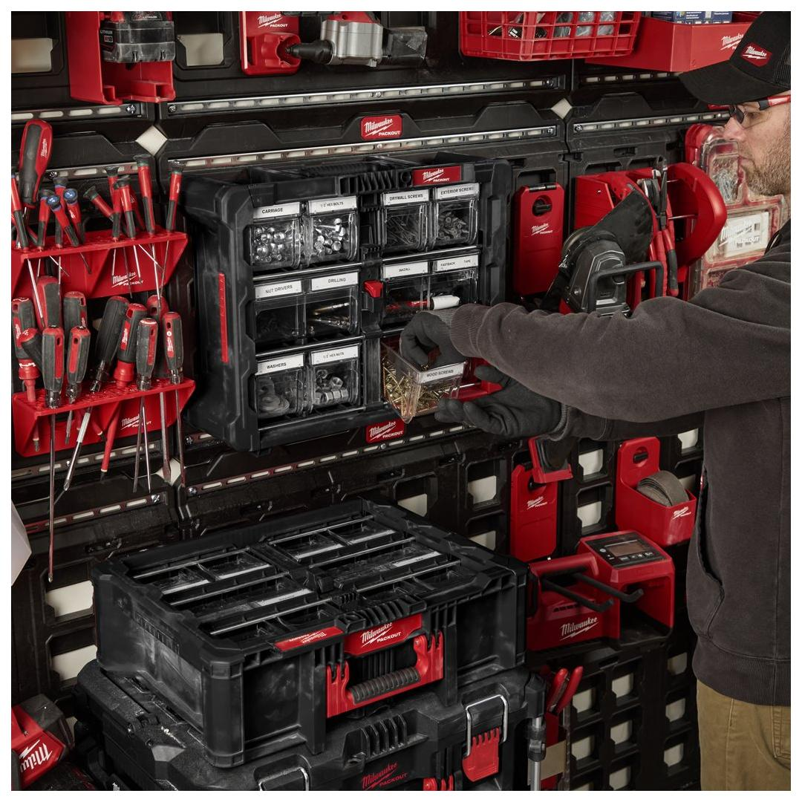
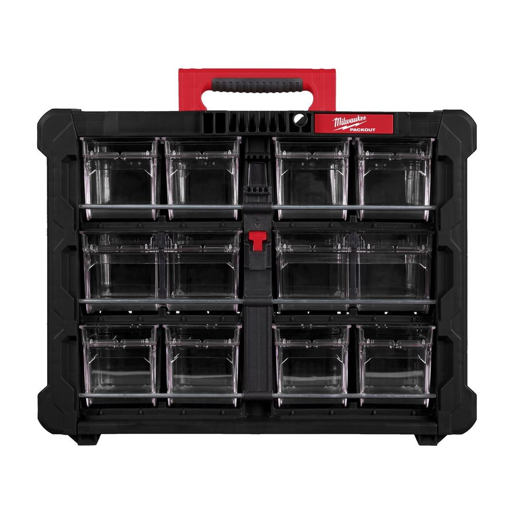
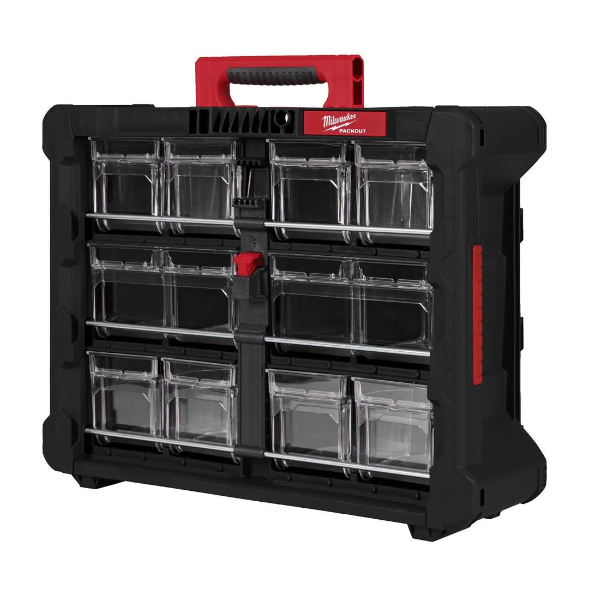
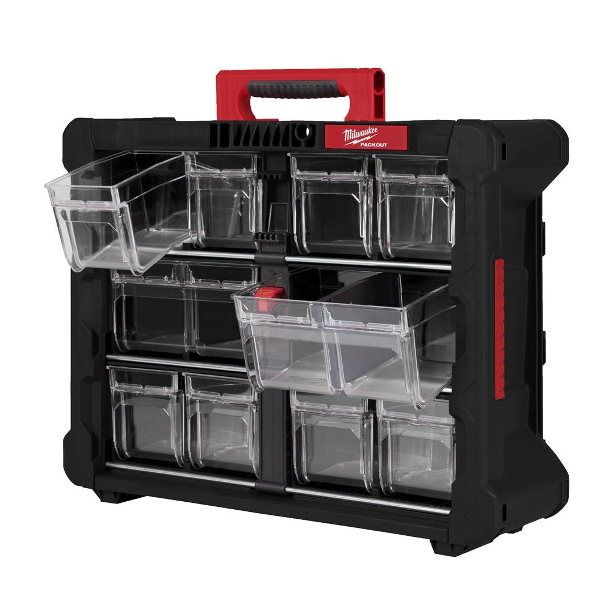
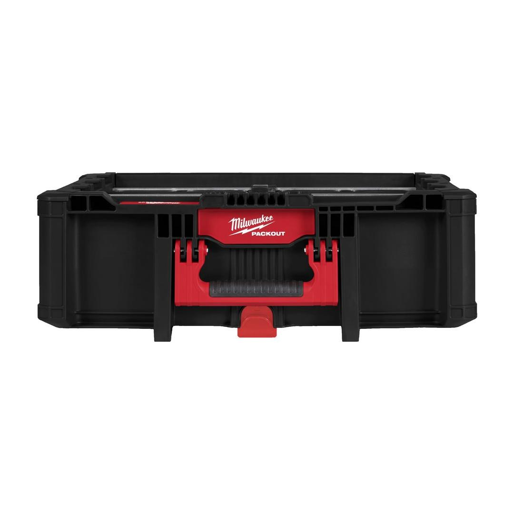
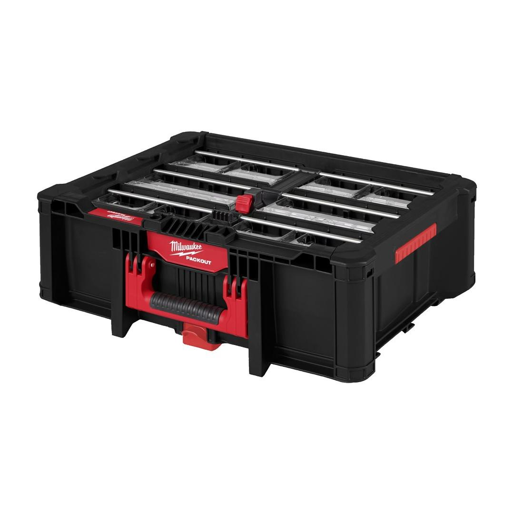
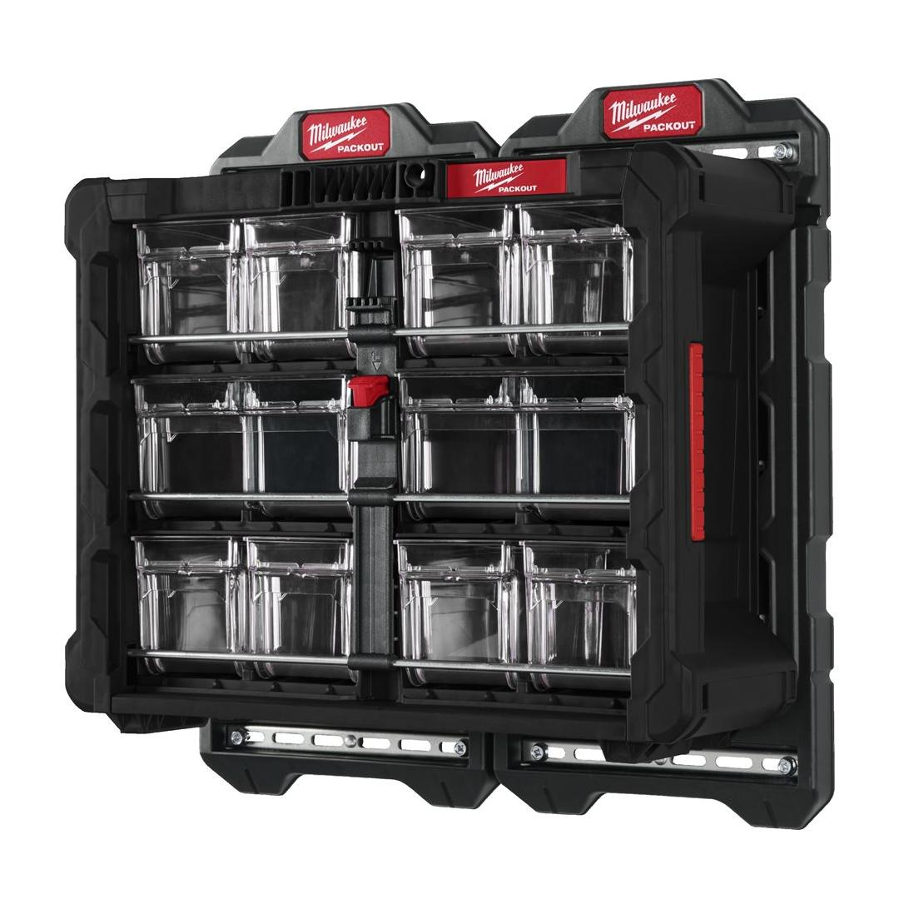

Milwaukee | Packout Tip Bin Organiser
4932498323








Features
- Constructed with impact resistant polymers for jobsite durability.
- Features 8 small and 2 large transparent bins.
- Bins can be tipped and taken out completely.
- Inside weight capacity 22.7 kg.
- Ergonomic handle for comfortable hold and transport.
- Stores small items like screws, bits, nails, washers, markers, knives.
- Hangs on the wall mounting plates and can be stacked on other PACKOUT™.
- Part of the PACKOUT™ modular storage system.
Information
| Dimensions (mm) | 170 x 500 x 386 |
| Loading capacity (kg) | 22.7 |
| MOQ | 1 |
| Pack quantity | 1 |
Weight